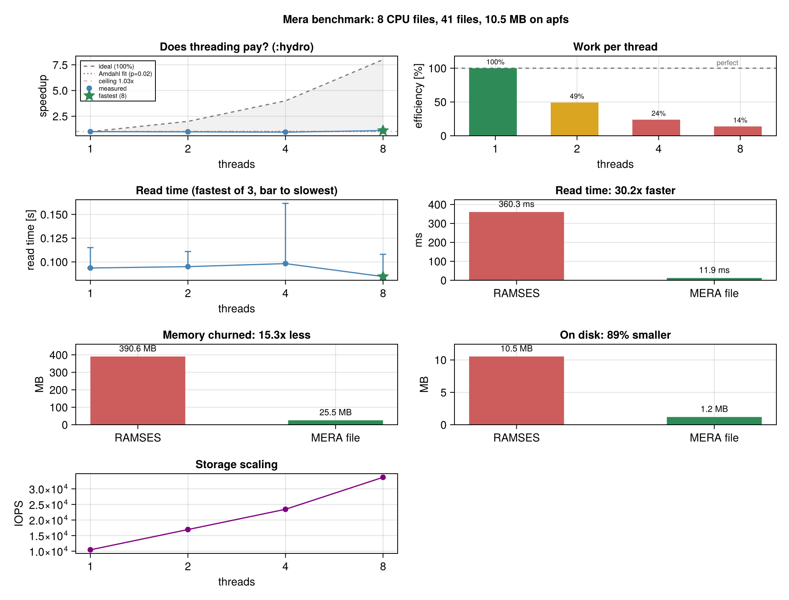

Run Your Own Benchmarks
The numbers on the Performance page come from one laptop. Yours will differ, and the point of this page is to help you find your sweet spots: how many threads your storage rewards, whether converting to MERA files pays for your workflow, and how many threads a projection of your data can actually use.
Everything here is exported. using Mera is all you need, there is nothing to download.
Everything at once
One call runs all of it and prints a report you can paste anywhere, with the machine, the filesystem and the snapshot's own file count attached:
using Mera
benchmark_report("/path/to/simulation", 250; merapath="/path/with/space")That is the whole setup. It refuses to start a read whose in-memory size would exceed 60% of the machine's RAM, and tells you the lmax cap to use instead:
benchmark_report("/path/to/simulation", 250; lmax=11, merapath="/path/with/space")stages selects which parts run. There are four:
| stage | what it measures | cost |
|---|---|---|
:storage | IOPS, throughput and open/close across thread counts | seconds, it samples |
:reading | reading each component from the RAMSES output, with GC | one read per component per repeat |
:conversion | write a MERA file, read it back, compare time, memory and disk | one read plus one write |
:sweep | how read time varies with thread count | one full read per thread count per repeat |
:all is the default and runs the first three. :sweep is never included in :all, because it is the only one whose cost multiplies; ask for it by name. To run just the cheap part first, stages=[:storage]. The individual functions below are still there if you want one measurement on its own.
Graphs
Mera does not depend on a plotting package, so a bare install writes the text report and the CSV/JSON only. Load a Makie backend and you get a figure as well, saved next to the report automatically:
using Mera, CairoMakie # add CairoMakie once: ] add CairoMakie
benchmark_report(path, 250; stages=[:storage, :sweep, :conversion])
That figure is a real run of the snippet above on sedov3d_grav_part, one of the public test simulations, so you can reproduce it in a couple of minutes before pointing anything at a large snapshot.
Panel by panel, and only the stages that ran appear:
| panel | what it plots | what to look for |
|---|---|---|
| Does threading pay? | measured speedup against the dashed diagonal of perfect scaling, with the shaded gap between them | how much of each added thread becomes speed; the dotted Amdahl fit and its ceiling say how much is left to gain at all |
| Work per thread | efficiency, speedup divided by thread count, against a 100% line | where added threads stop earning their core; green above 50%, red below 25% |
| Read time | time against thread count. The marker is the fastest run, the bar reaches the slowest, so it is one-sided by construction rather than an asymmetric error bar | how tall the bars are: a wide spread means a busy machine and numbers you should not trust |
| Read time RAMSES vs MERA | the same data read both ways | the ratio in the title |
| Memory churned | bytes allocated by each path | both end holding the same data, so this is the cost of getting there |
| On disk | size of the RAMSES files against the MERA file | mostly leaf-cell storage rather than compression, see Performance |
| Storage scaling | IOPS against thread count | where it stops climbing, which is the concurrency your filesystem rewards |
Read it as a demonstration of the output, not as a result: at 10.5 MB and 8 CPU files this fixture is far too small to say anything about performance. The Performance page has the same figure shape on a 53 GB production snapshot.
CairoMakie works headless, so it is fine over SSH with no display.
Without a backend nothing fails, the run just says no figure was written and you can call benchmarkplot(result) later.
Which stages sweep, and which do not
Worth knowing before you read the output:
| stage | thread counts tested |
|---|---|
| storage | sweeps 1, 2, 4, 8, 16, ... up to the budget |
| reading | one, at the budget |
| conversion | one, at the budget |
| reading sweep | sweeps, but only when you ask for it |
The reading sweep is the one that answers "how many threads should I read with", and it is opt-in because it is the only stage whose cost multiplies: one full read per thread count per repetition.
reading_sweep(250, "/path/to/simulation"; lmax=11)
# or as part of the report
benchmark_report(path, 250; stages=[:storage, :sweep], lmax=11)It prints how many full reads it will do before starting, and ends with the number to use. With runs above 1 it also reports the spread between fastest and slowest run at each thread count, which is how you tell a quiet node from a busy one:
threads time speedup efficiency
1 56.9 ms 1.00x 100%
2 56.6 ms 1.01x 50%
4 48.6 ms 1.17x 29%
8 47.8 ms 1.19x 15%
Fastest : 8 threads (47.8 ms)
Sweet spot : 4 threads, within 5% of the best for 50% of the coresIt also fits Amdahl's law to the rising part of the curve, which turns the measurement into an answer about the code rather than just the machine: what fraction of the read is actually parallel, how much of it is irreducibly serial, and the ceiling no number of threads can pass. The figure draws perfect scaling as a diagonal and shades the gap to the measurement, so how much of each added thread is being converted into speed is visible rather than inferred.
It reports three numbers, and the last is usually the one to act on:
- fastest, the lowest time measured
- sweet spot, the smallest count within 5% of it
- economical, the smallest count within 10%
On a flat curve the 5% band is nearly arbitrary, so the sweep also prints the trade in plain terms, for instance "going from 4 to 16 threads costs 4x the cores for 9% more speed". Take the economical point when the machine is shared or you have more snapshots to read: those cores do more good elsewhere, which the Performance page measures.
When the sweep runs inside benchmark_report, it runs first and the reading and conversion stages then use the sweet spot it found, not the full thread budget. That keeps one report internally consistent: it would be odd to recommend 16 threads and measure the conversion at 24. Setting max_threads yourself pins every stage to your number instead.
Bound it on a large snapshot with lmax, a subregion, or fewer threads values:
reading_sweep(250, path; threads=[1, 8, 16], runs=1, lmax=11)It will not take more cores than your job owns
Every stage is capped at min(Threads.nthreads(), allocated_cpus()). allocated_cpus() reads SLURM_CPUS_PER_TASK, SLURM_JOB_CPUS_PER_NODE, PBS_NP, NSLOTS and OMP_NUM_THREADS before falling back to Sys.CPU_THREADS, because on a shared node the machine's core count is not what your job may use.
The storage sweep stops at that number too, rather than climbing the default ladder to 64 threads. If Julia was started with more threads than the job owns, the report says so and names the right value:
Allocated CPUs : 16 (machine has 128, this job may use 16)
Julia threads : 128 compute, 128 GC
WARNING : Julia has more threads than this job is allocated.
Restart with julia -t 16 or the benchmark will oversubscribe.To leave headroom on a busy node, cap it yourself:
benchmark_report(path, 250; max_threads=8, merapath="...")The four measurements
using Mera
# 1. Storage limits: how many concurrent readers your filesystem rewards
run_benchmark("path/to/simulation/output_00300"; runs=2) # nfiles= caps the read sample
# 2. Reading the RAMSES output, per component, with GC accounting
run_reading_benchmark(300, "path/to/simulation"; runs=3)
# 3. Reading the same snapshot back from a converted MERA file
run_merafile_benchmark("path/to/merafiles", 300, 3)
# 4. Projection cost and thread scaling
gas = gethydro(getinfo(300, "path/to/simulation"))
benchmark_projection_hydro(gas, [1, 2, 4, 8], 3, "my_bench") # writes my_bench.{json,csv}
# 5. Is converting to a MERA file worth it for YOUR data?
benchmark_conversion("path/to/simulation", 300)Start Julia with the thread count you want to test, julia -t 8. Benchmarks 1, 2 and 4 sweep or accept thread counts internally.
| you want to know | run | the answer is |
|---|---|---|
| how many threads to read with | 1 | where IOPS stops climbing |
| what a full read costs you | 2 | per-component times and GC share |
| how fast a MERA file re-reads | 3 | cold and warm times |
| how many threads a projection uses | 4 | where the speedup flattens |
| whether converting is worth it | 5 | a break-even in re-reads |
The break-even
benchmark_conversion is the one to run if you only run one. Everything on the Performance page recommends converting a snapshot you touch more than once, and this turns that advice into a number for your data and your storage:
read from RAMSES : 53.3 ms
savedata write : 14.7 ms
one-off conversion : 68.0 ms
MERA re-read (warm) : 4.1 ms (13.0x faster)
size on disk : 1.6 MB -> 295.7 KB (82% smaller)
Converting pays for itself after 1.4 re-reads.It also reports what each path costs in memory, which is the half that disk size and read time do not show:
Memory to get the same data into RAM:
allocated, RAMSES : 7.2 MB
allocated, MERA : 2.9 MB (2.5x less churn)
GC time, RAMSES : 47.0 ms
GC time, MERA : 0.0 msBoth paths end with the same data in memory. The difference is what they churn through getting there: RAMSES parsing needs buffers for every per-CPU Fortran file, so on a snapshot with thousands of files it allocates far more and pays for it in garbage collection. That allocation is why reading a large RAMSES output can press against a node's memory limit when the data itself would fit comfortably.
The ratio grows with the file count, so a small fixture understates it.
Read it twice and you are already ahead. Compilation is excluded from both halves, which matters more than it sounds: unwarmed, this same fixture reports 750x and a break-even of 68, almost all of it Julia compiling rather than anything about the file format.
There is a fifth, clumpfind_benchmarks(gas; threshold=1e2, threshold_unit=:nH), which times each structure finder, the three boundedness potentials (:approx, :direct, :tree) and the per-clump statistics path. No reference run has been recorded for it, so it is a tool here rather than a published result.
Try it in one minute on public data
You do not need a simulation of your own to check that all of this runs:
path = download_testdata("sedov3d_amr") # 2.3 MB
gas = gethydro(getinfo(7, path))
run_reading_benchmark(7, path; runs=2)
benchmark_projection_hydro(gas, [1, 2], 2, "smoke")Be clear about what this does and does not tell you. Every public fixture is ncpu = 8 with 34 to 48 files per output. The per-file parsing cost that makes MERA files so much faster to re-read is essentially absent at that size, so this will not reproduce the read comparison on the Performance page. It confirms the harness works on your install, and it lets you read the output format before pointing it at something big.
Running this on a server
Most people analysing large RAMSES output are on a cluster, not a laptop, and several things change there.
The throughput test samples, it does not read everything. It reads file contents once per thread level per run, so against a whole snapshot the total would be size times levels times runs. On a 54 GB output with nine thread levels that is close to a terabyte. It defaults to 64 files and prints how much it sampled. Raise nfiles only if your storage can take it.
Measure a subregion, not the whole box. A full read of a large snapshot repeated several times is not a benchmark, it is an outage. Both reading benchmarks accept the usual selection keywords:
run_reading_benchmark(300, path; runs=3, lmax=10,
xrange=[-0.2, 0.2], yrange=[-0.2, 0.2], zrange=[-0.2, 0.2],
center=[:bc], range_unit=:standard)Do not accidentally measure the page cache. On a shared node, a file another user read a minute ago is already in memory, and you will measure RAM rather than storage. Distinguish the two deliberately: the first read after the file is cold is the number that matters for a fresh analysis, the warm re-read is the number that matters inside a loop. Both benchmarks report them separately.
Expect metadata cost to dominate, not bandwidth. A snapshot with ncpu in the thousands means thousands of file opens. On Lustre, GPFS or BeeGFS each open is a round trip to a metadata server that every other user shares. This is why the IOPS and open/close numbers below matter more on a server than the throughput figure does, and why the MERA-file advantage is larger there than on a local SSD.
More threads is not automatically better on shared storage. A parallel filesystem under many concurrent readers can slow down. Sweep, do not assume.
Say what you measured. A benchmark without the filesystem type, the node, the thread count and whether the cache was cold is not reproducible, including by you in six months.
What the storage numbers mean
run_benchmark runs three separate tests, and they answer different questions. Each is repeated across thread counts, so what you are reading is how the storage behaves as concurrency rises.
IOPS, input/output operations per second. It opens a file and immediately closes it again, doing nothing in between, then counts how many of those complete per second. It deliberately never reads content, so it measures the cost of the operation rather than the cost of the data: path lookup, permission checks and, on a networked filesystem, the round trip to the metadata server. This is the number that matters when a snapshot has 20489 files, because opening them is work before a single byte is read.
Throughput, MB/s per concurrent read. It reads whole file contents and divides bytes by elapsed time. Reported per read rather than aggregated, so with 8 threads the total the storage delivered is roughly eight times the figure shown. Every file is warmed first, so the thread levels differ by concurrency and not by which of them happened to find the data in the page cache.
Open/close latency. The time for a single open and close, reported as a median. Where IOPS tells you the rate the storage sustains in aggregate, this tells you what one operation costs, which is what you feel when a read walks thousands of files in sequence.
Read them together. IOPS climbing while open/close latency stays flat means the storage is absorbing the concurrency. Latency rising while IOPS flattens means you have found its limit.
Reference: IO on the laptop
Same machine and data as the Performance page: AVALON output 390, 20489 files on local btrfs, via run_benchmark(dir; runs=2).
| Threads | IOPS (mean) |
|---|---|
| 1 | 100,336 |
| 2 | 174,244 |
| 4 | 195,868 |
| 8 | 237,871 |
| 16 | 252,068 |
| 24 | 283,008 |
IOPS keeps climbing all the way to 24 threads on this filesystem, which is the shape you want to find on your own storage: the point where it stops climbing is the thread count your storage rewards. Note that this is not the same as the thread count worth giving a read, which the reading sweep settles separately and which turned out to be lower.
The report now records throughput and open/close latency beside IOPS. The table above predates that, so it has no throughput column; a fresh run fills one in.
It is per concurrent read, not aggregate, and it carries a confidence interval because the spread matters: a mean without one hides whether the storage was steady. An earlier version of this sweep compared cache states rather than thread counts and reported a per-stream rate above what the link could physically carry. Every file is warmed before the sweep now, so the levels differ by concurrency alone.
Knowing what is in a snapshot
benchmark_report prints the storage split before it measures anything, so you can see where the bytes are before deciding what to convert. On the reference snapshot:
storage by component:
hydro 24.94 GB 46.9%
gravity 17.52 GB 32.9%
amr 10.66 GB 20.1%
particle 65.0 MB 0.1%That matters for what you convert. Here gravity is a third of the data, so converting hydro alone leaves most of the snapshot behind. The AMR files are needed by every field component and are counted on the RAMSES side of any size comparison for that reason.
storageoverview gives the same breakdown on its own if you only want the numbers.
Reading the output
run_benchmark returns and prints IOPS, throughput and open/close statistics per thread level. run_reading_benchmark prints per-component means with standard deviations and writes a JSON file plus a CSV summary next to it, so repeated runs at different thread counts accumulate in one table. benchmark_projection_hydro writes .json and .csv with per-thread timings, memory and speedup.
Plotting is available through the Makie extension once you load a Makie backend.
Related
- Performance, the reference results and what they mean
- Multi-threading, choosing a thread budget
- Mera Files, how to convert a snapshot with
savedata